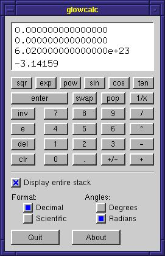

|
|
Back to lesson 7 |
| Introduction |
 Reverse Polish Notation (RPN) is an alternate way of notating mathematical expressions. Although not too commonly used, RPN is often touted as more efficient than the standard notation, and RPN calculators are popular with many in the scientific and engineering communities.
The basic premise of RPN is that the operator appears after the operands instead of between them. For example, what under normal notation appears as:
2 + 3appears in RPN as
2 3 +RPN calculators differ slightly in appearance from normal calculators. As you can see in the image to the right, the calculator has no equals button, but has an extra button called "enter". Everyone knows that to evaluate the above expression using a "normal" calculator, you would press:
[2] [+] [3] [=]and the calculator will display the answer, 5. With an RPN calculator, you press the "enter" key to separate the operands, and when you press the plus key, it evalulates the expression immediately.
[2] [enter] [3] [+]and the calculator will display the answer, 5. The result can also be used as an operand. For example, to evaluate (2+3)*4, which using a normal calcualtor could be computed like this:
[2] [+] [3] [*] [4] [=]could be computed using RPN in this way:
[2] [enter] [3] [+] [4] [*]
| A stack-based memory |
Memory in traditional calculators
The real power of RPN comes in its memory system. Most normal calculators have a memory that you can use to store partial results. For example, to evaluate 10/(2+3), you'll need to evaluate 2+3 first and temporarily store the intermediate result:
[2] [+] [3] [=] [store] [1] [0] [/] [recall] [=]It can be difficult to keep track of partial results in this manner, especially if your calculator has only one memory location. It also means you have to reorder the expression when you type it into the calculator. Even though the expression begins with a "10", you need to enter the "2" and "3" first.
Some more sophisticated calculators provide parentheses, so you don't have to manually reorder the expression, and store and recall results:
[1] [0] [/] [(] [2] [+] [3] [)] [=]However, this requires the calculator to "remember" that you're in the middle of an expression (10/x). As a result, it can be non-intuitive what mode the calculator is in, or exactly what it's doing at any given point. If you make a mistake, you'll typically need to start over.
Memory in RPN calculators
RPN calculators use a different memory model, based on a stack. Since you're reading this in the middle of a tutorial on a programming API, I'm going to assume you already know what a stack is. To put it simply, you store intermediate values by pushing them on the stack, and you can use previously stored values by popping them off.
In fact, the entire RPN model is based on a stack machine. When you enter a value, you're manipulating the value on the top of the stack, and pressing the enter key duplicates the value on top of the stack, and pushes the duplicate on top. Pressing an operator key pops the top two values off the stack, applies the operation, and pushes the result back on the stack.
A simple stack example
As an example, let's consider the expression 10/(2+3). Using an RPN calculator, we compute it like this:
[1] [0] [enter] [2] [enter] [3] [+] [/]Here's how that works. First we set the top of the stack to "10". Next, by pressing enter, we push a new value, a duplicate of "10", onto the stack, pushing the original "10" down. We set the new top value to "2". We push again using "enter", and set the new top value to "3". At this point, our stack looks like this:
10
2
3 <--topNow we start applying operations. Pressing "+" adds the top two values (2 and 3) and pushes the result, 5.
10
5 <--topNow, finally, we press "/", which divides 10 by 5 to yield the result, 2.
So what are the advantages of this method? First, notice that we didn't need to manually reorder the expression; we input the values in the same order as they appeared in the mathematical expression. Second, once you're used to thinking in terms of the stack, it's clear at all times what state the calculator is in. You know which computations have been done already and which ones are pending, and so you can correct mistakes or change things around in the middle.
| An example |
Computing (e-1)^(2/(pi-log(pi))) on an RPN calculator
Let's take a look at one more example. Suppose we want to evaluate (e-1)^(2/(pi-log(pi))) on our calculator.
First, whoops, we notice there's no key to give the value of "e". No problem, we'll just use exp(1)...
[1] [exp] [1] [-]Okay, now we've got e-1. For the next section, we need to divide 2 by something, so we first push a new value on the stack and set it to 2.
[enter] [2]Now we have to get the value of pi, for which there's no key again. No problem. We remember that pi=arccos(-1), and get a value for pi:
[1] [+/-] [inv] [acos]We needed to hit the inverse key to change the [cos] button to [acos]. Now we have three values on the stack:
e-1
2
pi <--topNow we need to subtract log(pi) from pi. No problem. We duplicate our value for pi using the enter key, and apply the log operator, and then subtract:
[enter] [log] [-]At this point, our top two values are set up to compute 2/(pi-log(pi)), and our intermediate value for e-1 is still waiting for us further down.
e-1
2
pi-log(pi) <--topWe can now finish off the computation:
[/] [inv] [pow]We needed to hit the inverse key once more to change from inverse mode back to normal mode to get the power function. And we're done!
Computing (e-1)^(2/(pi-log(pi))) on a traditional calculator
Now let's look at what would be involved if we had to perform the same computation on a standard notation calculator without parentheses. We'll consider a calculator with multiple memory locations (we'll need them!) that you can specify by letter. It might have looked like this:
[1] [exp] [-] [1] [=] [store] [A]Stores the intermediate result of e-1 in location "A". Now we need to reorder the "2" and the "pi-log(pi)" because we need to evaluate the second expression first.
[1] [+/-] [inv] [acos] [store] [B]Stores the intermediate result of pi in location "B". We also need to store log(pi), because the - operator is not commutative:
[log] [store] [C]Now we've got a lot of intermediate values stored away, and we can finally start using them. First, compute pi-log(pi).
[recall] [B] [-] [recall] [C] [=] [store] [D]Since the division operator doesn't commute either, we had to store the intermediate result before dividing it into 2:
[2] [/] [recall] [D] [=] [store] [E]Alas, the exponentiation operator doesn't commute either, so we had to store yet another intermediate result before applying the final operation.[recall] [A] [inv] [pow] [recall] [E] [=]Finally! And we almost forgot which memory location was holding e-1.
Play it again, Sam!
To summarize, let's compare the full order of operations using our RPN calculator, versus the standard calculator. Using RPN:
[1] [exp] [1] [-] [enter] [2] [1] [+/-] [inv] [acos] [enter] [log] [-] [/] [inv] [pow]... and using standard notation:
[1] [exp] [-] [1] [=] [store] [A] [1] [+/-] [inv] [acos] [store] [B] [log] [store] [C] [recall] [B] [-] [recall] [C] [=] [store] [D] [2] [/] [recall] [D] [=] [store] [E] [recall] [A] [inv] [pow] [recall] [E] [=]Try out the RPN calculator we build in this tutorial. It does take a little getting used to, but once you have the hang of it, you'll probably never want to go back to those "other" calculators again. If you're looking for a good handheld, Hewlett Packard makes some good RPN scientific calculators. I especially recommend the HP-48G.
|
|
Back to lesson 7 |
The GLOW Toolkit